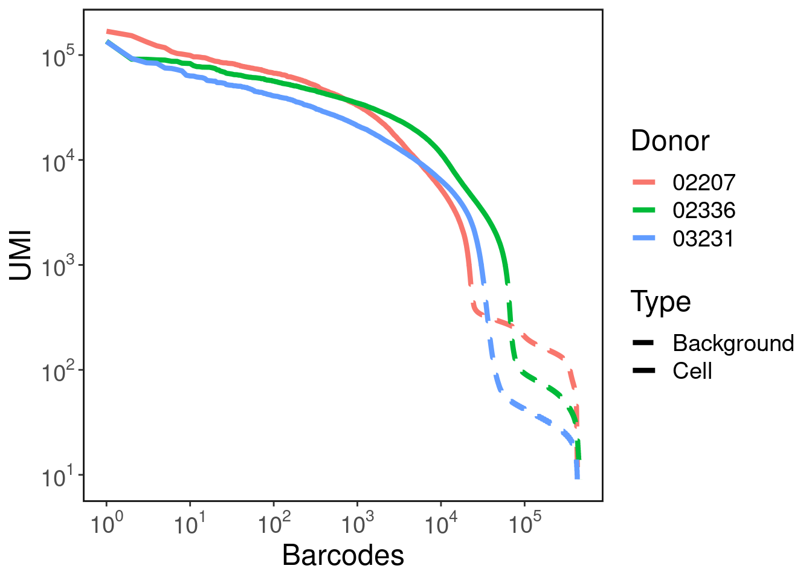
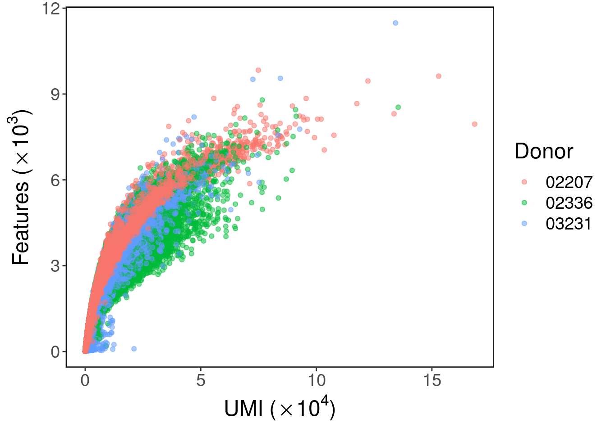
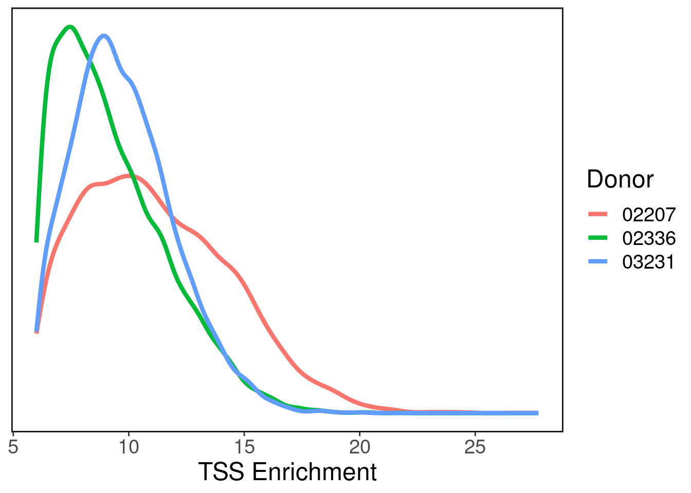
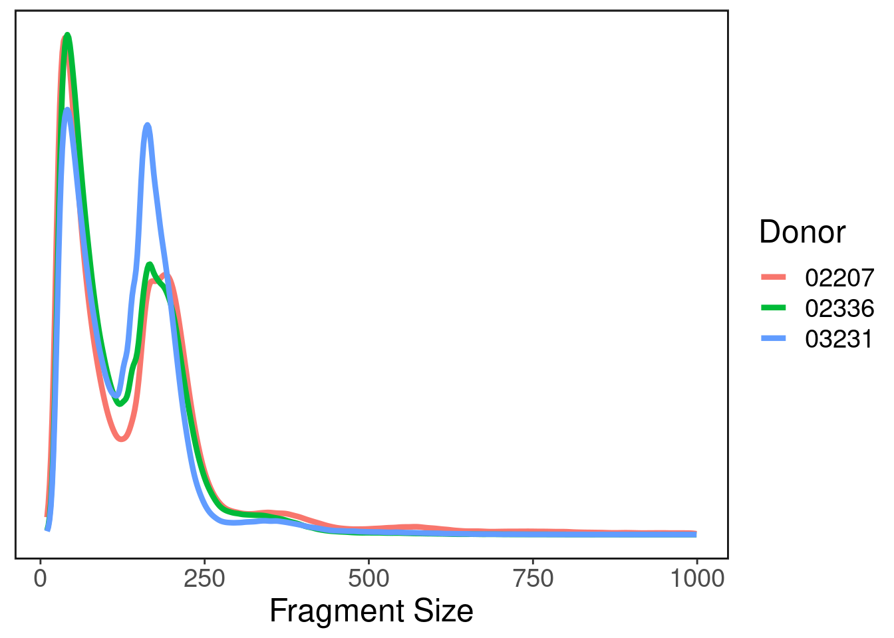

srna <- readRDS('../seurat/Heart_Seurat_RNA_all_samples_raw.RDS')donors <- c("02207","02336","03231")
qc.df <- data.frame(umi = srna$nCount_RNA, Donor=srna$individual)
df.list <- list()
for(d in donors){
curr.df <- qc.df %>% filter(Donor == d) %>% arrange(-umi) %>% mutate(rank = 1:nrow(.)) %>% mutate(Type=ifelse(umi > 1000, 'Cell','Background'))
df.list[[d]] <- curr.df
}
qc.df <- Reduce(rbind, df.list)This plot shows each barcode's UMI count and rank. It is useful for distinguishing actual cells vs background.
ggplot(qc.df, aes(x = rank, y=umi, color=Donor)) + geom_line(aes(linetype = Type), size=1.5) + ggClean() +
scale_y_log10(breaks = scales::trans_breaks("log10", function(x) 10^x),
labels = scales::trans_format("log10", scales::math_format(10^.x))) +
scale_x_log10(breaks = scales::trans_breaks("log10", function(x) 10^x),
labels = scales::trans_format("log10", scales::math_format(10^.x))) +
scale_linetype_manual(values = c("dashed","solid")) +
xlab('Barcodes') + ylab('UMI')
This plot shows how many genes are detected at each level of UMI count. We use UMI count as a proxy for read count which we do not record directly. This plot is useful for setting lower and upper limits on features as to filter doublets and background barcodes.
qc.df <- data.frame(umi = srna$nCount_RNA/10^4, features=srna$nFeature_RNA/1000, Donor=srna$individual)
ggplot(qc.df, aes(x=umi, y=features, color=Donor)) + geom_point(alpha=0.5) + ggClean() + xlab(expression('UMI ('%*% 10^4*')')) + ylab(expression('Features (' %*% 10^3*')'))
d22 <- loadArchRProject('../ArchR_project_02207/', showLogo = F)## Successfully loaded ArchRProject!d23 <- loadArchRProject('../ArchR_project_02336/', showLogo = F)## Successfully loaded ArchRProject!d32 <- loadArchRProject('../ArchR_project_03231/', showLogo = F)## Successfully loaded ArchRProject!This shows the distribution of TSS enrichment across cells. Cells with low value of TSS enrichment are low quality.
tss.df <- data.frame(tss.enrich = c(d22$TSSEnrichment, d23$TSSEnrichment, d32$TSSEnrichment),
Donor = c(rep('02207', length(d22$cellNames)), rep('02336', length(d23$cellNames)), rep('03231', length(d32$cellNames))))ggplot(tss.df) + stat_density(aes(x=tss.enrich, color=Donor), geom="line", position="identity", size=1.5) + ggClean() + xlab('TSS Enrichment') +
theme(axis.title.y=element_blank(),
axis.text.y=element_blank(),
axis.ticks.y=element_blank())
This plot tells us the fragment size distribution. A good ATAC-seq library will have two peaks: one around ~50 bp representing the pitch of DNA and one around ~150 representing actual open chromatin peaks.
n_down_sample <- 10^6
d22.sizes <- readRDS('../ArchR_project_02207/fragment_sizes.rds')
d22.sizes <- d22.sizes[sample(1:length(d22.sizes), n_down_sample, replace=F)]
d23.sizes <- readRDS('../ArchR_project_02336/fragment_sizes.rds')
d23.sizes <- d23.sizes[sample(1:length(d23.sizes), n_down_sample, replace=F)]
d32.sizes <- readRDS('../ArchR_project_03231/fragment_sizes.rds')
d32.sizes <- d32.sizes[sample(1:length(d32.sizes), n_down_sample, replace=F)]size.df <- data.frame(sizes=c(d22.sizes, d23.sizes, d32.sizes), Donor=c(rep("02207",length(d22.sizes)), rep("02336",length(d23.sizes)), rep("03231", length(d32.sizes))))
size.df <- size.df[size.df$sizes < 1000, ]ggplot(size.df) + stat_density(aes(x=sizes, color=Donor), geom="line", position="identity", size=1.5) + ggClean() +
theme(axis.title.y=element_blank(),
axis.text.y=element_blank(),
axis.ticks.y=element_blank()) +
xlab('Fragment Size')